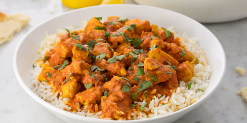

Chicken Curry
INGREDIENTS
- 2 tbsp. extra-virgin olive oil
- 1 medium yellow onion, chopped
- 2 lb. boneless skinless chicken breasts, cut into 1" pieces
- 3 cloves garlic, minced
- 1 tbsp. minced ginger
- 1 tsp. paprika
- 1 tsp. ground turmeric
- 1 tsp. ground coriander
- 1/2 tsp. ground cumin
- 1 (15-oz.) can crushed tomatoes
- 1 1/2 c. low-sodium chicken broth
- 1/2 c. heavy cream
- Kosher salt
- Freshly ground black pepper
- Basmati rice or naan, for serving
- 1 tbsp. freshly chopped cilantro, for garnish
Preparation
-
In a large pot over medium-high heat, heat oil. Add onion and cook until soft, 5 minutes. Add chicken and sear
until nopink remains, 5 minutes. Stir in garlic and ginger and cook until fragrant, 1 minute.
- Add spices and cook until very fragrant, 1 minute. Add tomatoes and broth and bring to a simmer. Stir in heavy
cream,and season with salt and pepper. Simmer until chicken pieces are cooked through and tender, about 10
minutes.
- Serve over rice or with naan, garnished with cilantro.